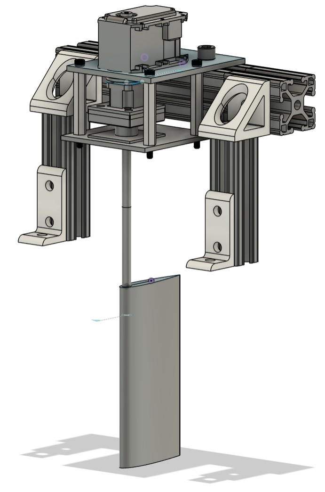
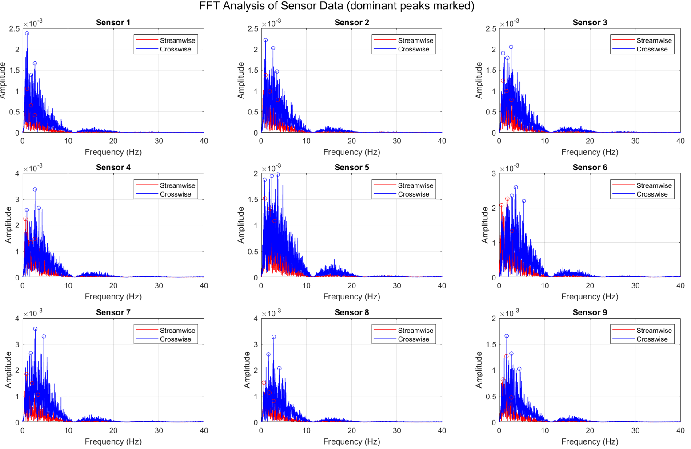
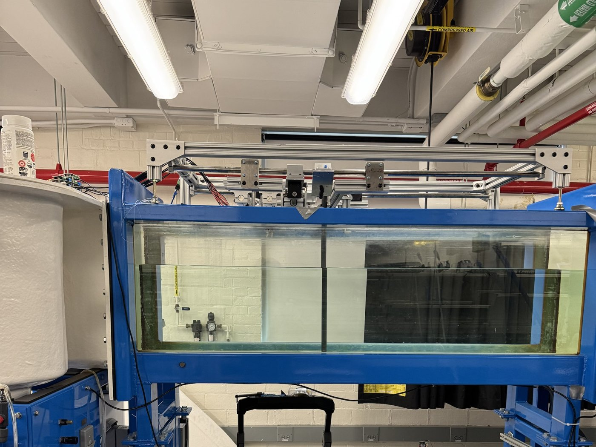
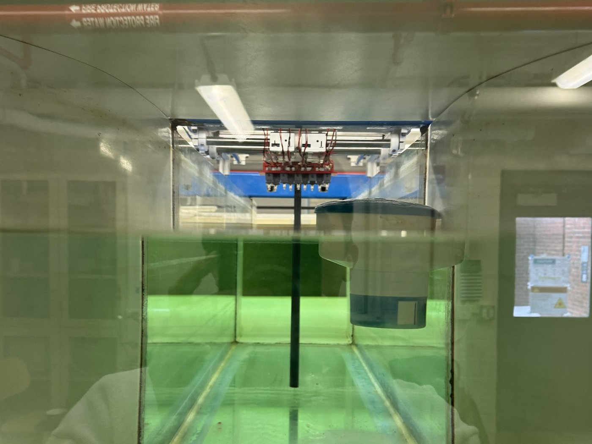

Whisker Inspired Wake Sensing
Seals can track the wakes of swimming fish with their whiskers alone. In the University of Rochester Hydrodynamics Lab, I help build and test biomimetic whisker sensors that do the same for underwater robots.
- My role
- Mechanical Engineering Intern
- Mentor
- Dr. Jessica Shang
- Tools
- Fusion 360, MATLAB, water channel
What I worked on
I fabricated biomimetic seal whiskers and collected experimental data to analyze how hydrodynamic wake patterns can be used to tell objects apart. In Summer 2025, I designed a motorized airfoil system in Fusion 360 and programmed the water channel control and data acquisition system in MATLAB.

I also debugged the MATLAB pipeline we use for FFT analysis of the whisker strain signals. The root cause turned out to be samples building up in the DAQ buffer, because the loop read only one sample per cycle while the hardware sampled at 800 Hz.

The experiment
Each whisker sensor is a resin printed whisker mounted on a PDMS base with two embedded strain gauges, one for streamwise and one for crosswise strain. We placed an array of nine sensors in the channel's 60 by 15 by 20 inch test section, downstream of either a stationary cylinder, which sheds a drag producing Kármán vortex street, or the pitching foil, which sheds a thrust producing reverse Kármán street. The foil's pitching frequency and angle were set so both objects had a Strouhal number near 0.2, and the array was tested at three distances downstream of each.
We applied spectral proper orthogonal decomposition (SPOD) to the strain data to find the dominant frequencies and structures each wake imprints on the array. SPOD picked out a 0.93 Hz peak for the cylinder, close to the predicted 0.97 Hz, and recovered the foil's pitching frequency along with its harmonics. The foil produced higher strains overall, while the cylinder produced more crosswise than streamwise strain and a clear phase reversal across the center of the array. The reconstructed strain maps did not yet separate the two vortex streets, which is the focus of ongoing work.
Presentations and papers
- "Wake-Induced Vibrations of a Whisker-Inspired Sensor Array." Poster, APS Division of Fluid Dynamics Annual Meeting, 2025. Second author, with first author Sandhya Vaidyanathan.
- "Feel the swirl: How whisker bending signals can encode vortices for underwater perception." Co-author, manuscript under review.

Gallery

